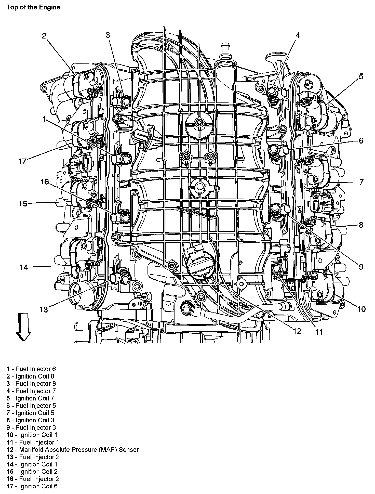
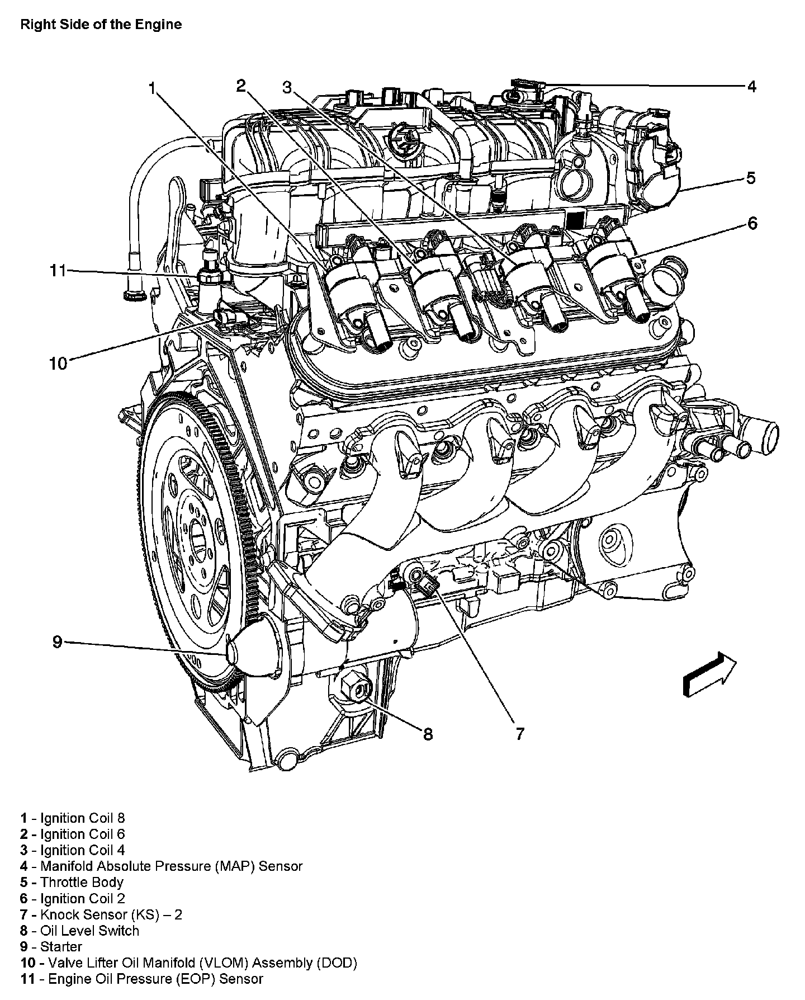
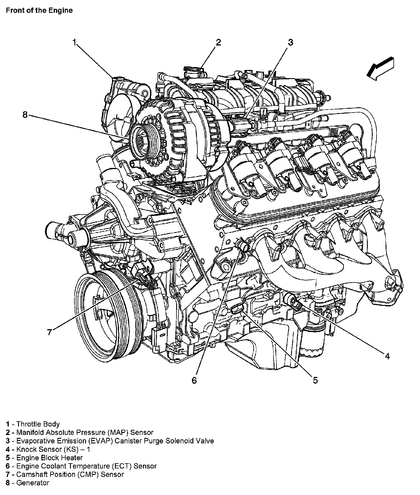

Operation CHARM
: Car repair manuals for everyone.
Home
>>
Cadillac
>>
2007
>>
Escalade ESV AWD V8-6.2L
>>
Repair and Diagnosis
>>
Sensors and Switches
>>
Sensors and Switches - Powertrain Management
>>
Sensors and Switches - Computers and Control Systems
>>
Manifold Pressure/Vacuum Sensor
>>
Locations
Manifold Pressure/Vacuum Sensor: Locations
Top Of The Engine:

Right Side Of The Engine:

Front Of The Engine:
